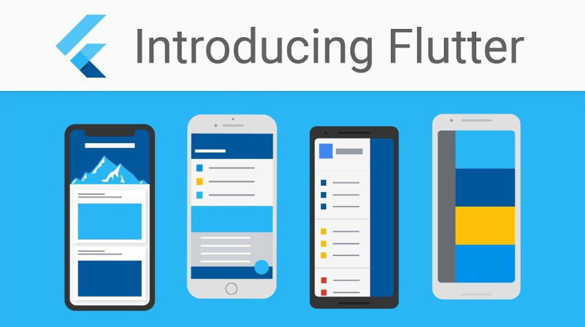
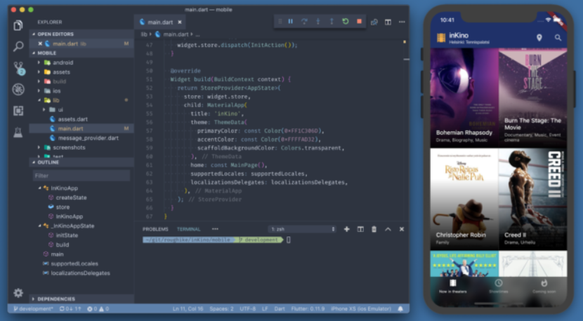
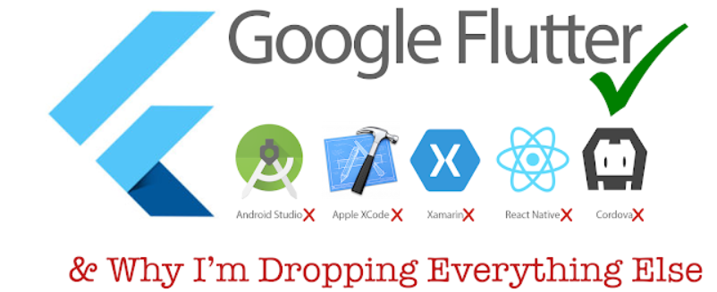
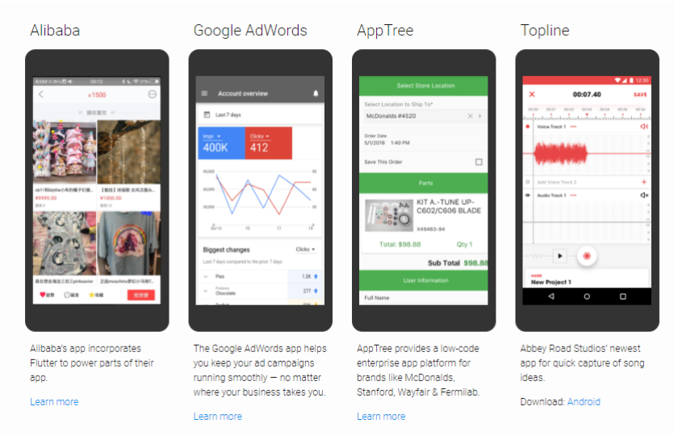

What is Flutter?
The latest global technology ..
It is an SDK from Google dedicated to programming smart phone applications operating on the Android system,
IOS and Fuchsia (a new operating system from Google) and also began to develop to be able to develop the web,
as it focuses on the experience of the user and the developer at the same time, and this is because it
provides a comprehensive framework The Dart language is dedicated to drawing destinations with high quality
and original applications with excellent performance, and at the same time it gives the developer the tools
that make him build complete applications in the least time.

MORE ABOUT FLUTTER
- What does FLUTTER offer?
- The most important thing that the Flutter framework has to offer the mobile app makers community is that it can create Android and iOS apps at the same time with similar source code, and it also uses a compiled programming language called Dart, which is compiled 'ahead of time' AOT. ) to native code for both iOS and Android. Also, the framework is not like its predecessors that rely on javascript as a bridge between the browser and the operating system, in addition to facilitating modular writing of codes and creating professional interfaces with the least possible and readable code. A few days ago, Google released the first stable version of Flutter, which bore the name Flutter 1.0, which will be a cross-platform for developing applications for all systems and devices as well, to officially start the era of Flutter.
- Interfaces and system interfaces ?
- One of the advantages of Flutter, which made it easier to develop mobile applications , is its reliance on the widgets system. Flutter is even easier. The Widgets system in the Flutter framework made it easy to create new components, and the power of the Dart language also contributed to it being an object-oriented language in this matter, so that it is possible to take a main widget and add new properties of effects and animations to it in a simple and uncomplicated way. This made it possible to create new components within the framework and to include Material Design in components running on Android and Cupertino on IOS.
- FLUTTER against the rest of the competitors in the market?
- Of course, the market for programming smart phone applications is very large, and in the recent period solutions appeared that enable us to make applications for both the popular Android and IOS systems in addition to the web, the desktop and embedded devices at the same time, and these solutions differ technically, and in this table I will explain to you the important differences Among the top four competitors now in the smartphone app development market in one language (the comparison will not include the native tools i.e. Java and Kotlin for Android and Swift and Object-C for IOS).
- What's new in FLUTTER ?
- There are several new ideas that FLUTTER came up with. As the philosophy of the Flatter team is the possibility of drawing each pixel on the screen freely and not being linked to the system, i.e. just like games, but the factor that made Flatter reach what it has reached now is direct support from another team in Google, which is the Material Design team, because Flatter provides all the components Material Design, in its latest version, even before Android got it, and this was announced at the Google IO conference this year . And one of the things in which there is a big difference is the method of FLUTTER in drawing interfaces because FLUTTER use the programming language Dart in everything for writing and design as well.
- Are there large companies using FLUTTER now?
- Yes, including Google, of course, and Google has published a page containing all the famous applications that were made using FLUTTER, and this is the link to the page. This is also an article published this week about the largest development companies that started using filters.



Features that distinguish it from other languages
- Flutter transforms the app development process. Build, test, and deploy beautiful mobile, web, desktop, and embedded apps from a single codebase.
- Flutter is an open source framework by Google for building beautiful, natively compiled, multi-platform applications from a single codebase.
-
FAST
Flutter code compiles to ARM or Intel machine code as well as JavaScript, for fast performance on any device. -
PRODUCTIVE
Build and iterate quickly with Hot Reload. Update code and see changes almost instantly, without losing state. -
FLEXIBLE
Control every pixel to create customized, adaptive designs that look and feel great on any screen. -
MULTI-PLATFORM
Reach users on every screen
Deploy to multiple devices from a single codebase: mobile, web, desktop, and embedded devices. -
SABLE & RELIABLE
Trusted by many
Flutter is supported and used by Google, trusted by well-known brands around the world, and maintained by a community of global developers. - Supported by Google, open to everyone
Conclusion
- Well, what do you think of Flutter? Will you start learning it next year?
- I hope that this introduction has interested and motivated you. Feel free to share this article if you liked it.
- Flutter has a robust community, and it’s only the beginning!
- Flutter is a modern framework, and you can feel it!